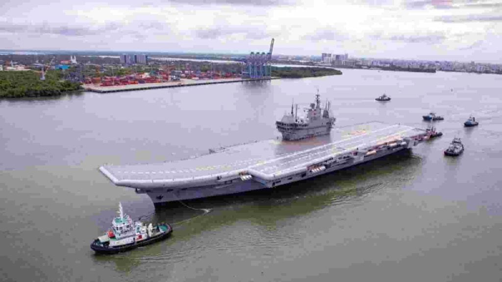
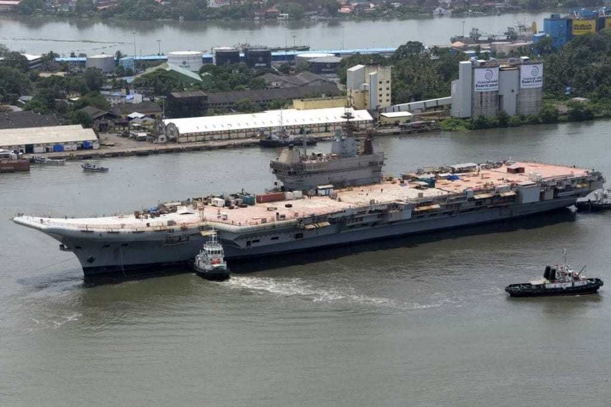
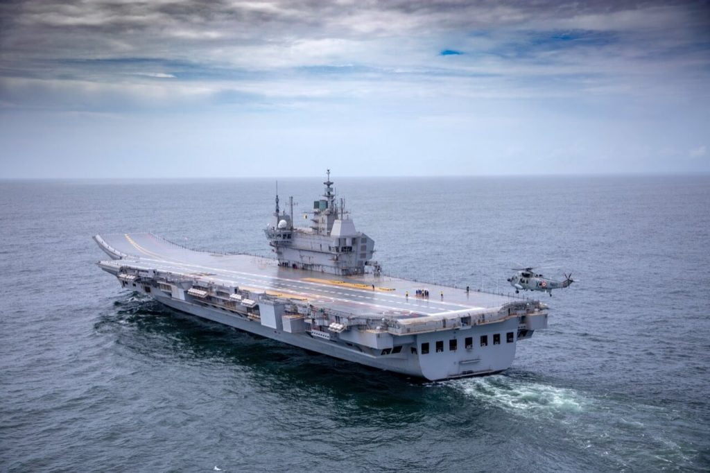
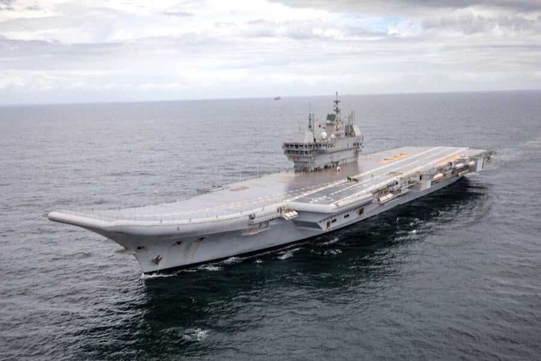
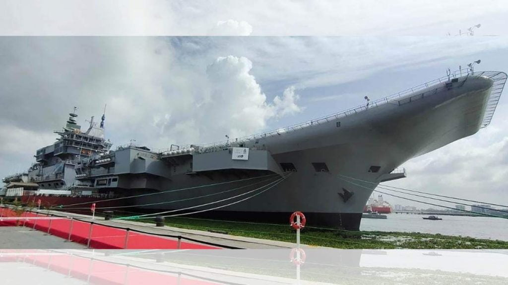

အိန္ဒီယ ရေတပ် တာဝန်ရှိသူတွေက ပြောကြားရာမှာ စမ်းသပ်မှု ကာလအတွင်း ဒီလေယာဉ်တင် သင်္ဘောကြီးရဲ့ စံနစ်အားလုံး ကျေနပ်ဖွယ် ရှိခဲ့တယ်လို့ ပြောကြာပါတယ်။ ဒီ စမ်းသပ်မှု ကာလအတွင်းမှာ ဒီသင်္ဘောကြီးရဲ့ ကိုယ်ထည်ပိုင်း ကြံ့ခိုင်မှု၊ စက်ပိုင်း ကြံ့ခိုင်မှု၊ အင်ဂျင်စွမ်းအား နဲ့ အထောက်အကူပြု ပစ္စည်း ကိရိယာများရဲ့ ပုံမှန် လုပ်ဆောင်မှု တို့ကို စစ်ဆေးခဲ့တယ်လို့ ဆိုပါတယ်။
ဒီ ပင်လယ်ပြင် စမ်းသပ်မှုကို ရေတပ်မတော်ရဲ့ ရေကြောင်း ဒုတိယ ဗိုလ်ချုပ်ကြီး Vice Admiral AK Chawla က တာဝန်ယူ ကြီးကြပ်ခဲ့တာ ဖြစ်ပါတယ်။ သူဟာ တောင်ပိုင်းရေတပ် ဌာနချုပ်ရဲ့ ဌာနချုပ်မှူး လဲ ဖြစ်ပါတယ်။ သူက ဒါဟာ အိန္ဒိယ ရေတပ်မတော် သမိုင်းမှာ သမိုင်းဝင် နေ့တစ်နေ့ ဖြစ်တယ်လို့ ပြောကြားခဲ့ပါတယ်။

ဒီ ဗီခရန့် လေယာဉ်တင် သင်္ဘောကြီးကို အိန္ဒိယ နိုင်ငံ လွတ်လပ်ရေးနေ့ ၇၅ နှစ် ပြည့်မှာ ရေတပ်ကို တပ်တော်ဝင် နိုင်ဖို့ ရည်မှန်းထားတာပါ။ ဒီ လေယာဉ်တင် သင်္ဘောကြီးကို ပြည်တွင်းမှာ တည်ဆောက်နိုင်တာဟာ အိန္ဒိယ နိုင်ငံ အတွက် အထူးအရေးပါတဲ့ အောင်မြင်မှုပဲ ဖြစ်ပါတယ်။
ဒီ လေယာဉ်တင် သင်္ဘောကြီးဟာ အလျား ၂၆၂ မီတာ၊ အနံ ၆၂ မီတာ ရှိပြီး တန်ချိန် ၃၉,၀၀၀ တန် အလေးချိန် ရှိပါတယ်။ လေယာဉ်တွေ လွှတ်တင်တာနဲ့ ပြန်လည် ဆင်းသက်တာကိုတော့ STOBAR (Short Take-Off But Arrested Recovery) နည်းပညာကို အသုံးပြုထားပါတယ်။

ဒီလေယာဉ်တင် သင်္ဘောမှာ လေယာဉ် စုစုပေါင်း ၃၆ စင်းကနေ အစင်း ၄၀ ခန့်ထိ တင်ဆောင်နိုင်မှာ ဖြစ်ပါတယ်။ ဒီအထဲမှာ ရုရှားနိုင်ငံထုတ် MiG-29K အမျိုးအစား ၂၆ စင်းလဲ ပါဝင်မှာ ဖြစ်ပါတယ်။ ဒါ့အပြင် Kamov-31 အမျိုးအစား ရဟတ်ယာဉ်များ၊ MH-60R multi-role helicopter အထွေထွေသုံး ရဟတ်ယာဉ်များ လဲ ပါဝင်မှာ ဖြစ်ပါတယ်။ စုစုပေါင်း ရေလုံခန်း အခန်း ၂,၃၀၀ ဖွဲ့စည်းတည်ဆောက် ထားပါတယ်။

ဒီ သင်္ဘောကြီးကို General Electric LM2500 gas turbines ဓါတ်ငွေ့ တာဘိုင် အင်ဂျင် လေးလုံး တပ်ဆင်ထားပါတယ်။ အမြန်ဆုံး တစ်နာရီ ရေမိုင် ၂၈ မိုင် (၅၂ ကီိလိုမီတာ / ၃၂ မိုင်) ထိ မောင်းနှင်နိုင်မှာ ဖြစ်ပြီး စုစုပေါင်း ရေမိုင် ၈,၀၀၀ (ကီလိုမီတာ ၁၅,၀၀၀ / မိုင် ၉,၂၀၀) အထိ မရပ်မနား မောင်းနှင်နိုင်မှာ ဖြစ်ပါတယ်။ ရေတပ်သား ၁,၆၄၅ ဦးနဲ့ အရာရှိ ၁၉၆ ဦး ပါဝင်မှာ ဖြစ်ပါတယ်။

